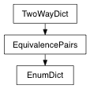

This class provides a dictionary type for storing enumerations. Keys are string labels, while values are enumerated integers.
To instantiate, pass a sequence of string arguments to the EnumDict() constructor:
>>> from enum import EnumDict
>>> Colours = EnumDict(['red', 'blue', 'green'])
>>> Weekdays = EnumDict(['mon', 'tue', 'wed', 'thu', 'fri', 'sat', 'sun'])
>>> sorted(Weekdays.items())
[('fri', 4), ('mon', 0), ('sat', 5), ('sun', 6), ('thu', 3), ('tue', 1), ('wed', 2)]
Alternately, a dictionary of label-value pairs can be provided:
>>> Numbers = EnumDict({'one': 1, 'two': 2, 'hundred' : 100, 'thousand' : 1000 } )
To convert from one representation to another, just use normal dictionary retrieval, it works in either direction:
>>> Weekdays[4]
'fri'
>>> Weekdays['fri']
4
If you need a particular representation, but don’t know what you’re starting from ( for example, a value that was passed as an argument ) you can use EnumDict.key or EnumDict.value:
>>> Weekdays.value(3)
3
>>> Weekdays.value('thu')
3
>>> Weekdays.key(2)
'wed'
>>> Weekdays.key('wed')
'wed'
get a key value from an index. this method always returns a key. if a valid key is passed instead of an index, the key will be returned unchanged. this is useful when you need a key, but are not certain whether you are starting with a key or an index.
>>> units = EnumDict(['invalid', 'inches', 'feet', 'yards', 'miles', 'millimeters', 'centimeters', 'kilometers', 'meters'])
>>> units.key(2)
'feet'
>>> units.key('inches')
'inches'
>>> units.key(10)
Traceback (most recent call last):
...
ValueError: invalid enumerator value: 10
>>> units.key('hectares')
Traceback (most recent call last):
...
ValueError: invalid enumerator key: 'hectares'
return a list of keys as strings ordered by their enumerator value
get an index value from a key. this method always returns an index. if a valid index is passed instead of a key, the index will be returned unchanged. this is useful when you need an index, but are not certain whether you are starting with a key or an index.
>>> units = EnumDict(['invalid', 'inches', 'feet', 'yards', 'miles', 'millimeters', 'centimeters', 'kilometers', 'meters'])
>>> units.value('inches')
1
>>> units.value(3)
3
>>> units.value('hectares')
Traceback (most recent call last):
...
ValueError: invalid enumerator key: 'hectares'
>>> units.value(10)
Traceback (most recent call last):
...
ValueError: invalid enumerator value: 10
return a list of ordered integer values